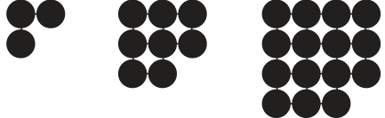
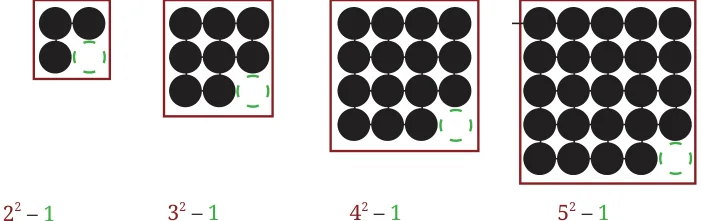
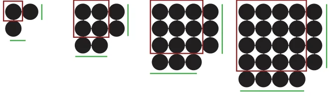
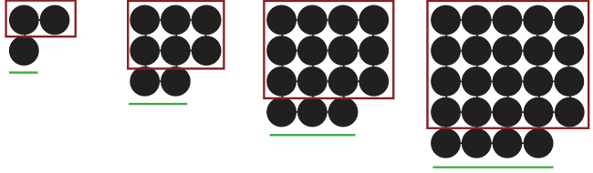
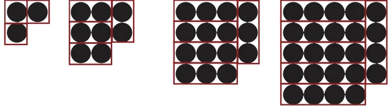
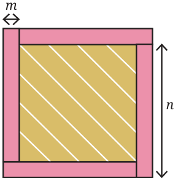
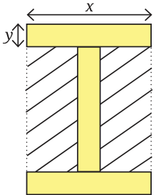
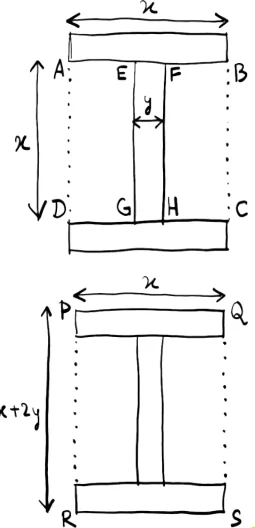
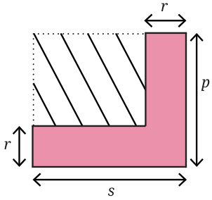

Observe the pattern in the figure below. Draw the next figure in the sequence. How many circles does it have? How many total circles are there in Step 10? Write an expression for the number of circles in Step k.

There are many ways of interpreting this pattern. Here are some possibilities:

Method 1

\(2^2 - 1 = (1+1)^2 - 1\), \(3^2 - 1 = (2+1)^2 - 1\), \(4^2 - 1 = (3+1)^2 - 1\), \(5^2 - 1 = (4+1)^2 - 1\) . . . \((k+1)^2 - 1\)
Method 2

\(1^2 + 2 \times 1\), \(2^2 + 2 \times 2\), \(3^2 + 2 \times 3\), \(4^2 + 2 \times 4\) . . . \(k^2 + 2 \times k\)
Method 3

\(1 \times 2 + 1 = 1 \times (1+1) + 1\), \(2 \times 3 + 2 = 2 \times (2+1) + 2\), \(3 \times 4 + 3 = 3 \times (3+1) + 3\), \(4 \times 5 + 4 = 4 \times (4+1) + 4\) . . . \(k \times (k+1) + k\)

Method 4

\(1 \times 3 = 1 \times (1+2)\), \(2 \times 4 = 2 \times (2+2)\), \(3 \times 5 = 3 \times (3+2)\), \(4 \times 6 = 4 \times (4+2)\) . . . \(k \times (k+2)\)
Does your method match any of these, or is it different? Each expression that we have identified appears different, but are they really different? Since they describe the same pattern, they should all be the same. Let us simplify each expression and find out.
\((k+1)^2 - 1\) | \(k^2 + 2 \times k\) | \(k \times (k+1) + k\) | \(k \times (k+2)\)
\(= k^2 + 1 + 2k - 1\) | \(= k^2 + 2k\) | \(= k^2 + k + k\) | \(= k^2 + 2k\)
\(= k^2 + 2k\) | | \(= k^2 + 2k\)
When carried out correctly, all methods lead to the same answer; \(k^2 + 2k\). The expression \(k^2 + 2k\) gives the number of circles at Step k of this pattern.
In Mathematics, there are often multiple ways of looking at a pattern, and different ways of approaching and solving the same problem. Finding such ways often requires a great deal of creativity and imagination! While one or two of the ways might be your favourite(s), it can be amusing and enriching to explore other ways as well.
Use this formula to find the number of circles in Step 15.
Consider the pattern made of square tiles in the picture below.
How many square tiles are there in each figure?
How many are there in Step 4 of the sequence? What about Step 10?
Write an algebraic expression for the number of tiles in Step n. Share your methods with the class. Can you find more than one method to arrive at the answer?
Find the area of the (interior) shaded region in the figure below. All four rectangles have the same dimensions.

Tadang’s method:
Tadang’s method: The total region is a square of side \((m + n)\) with an area \((m + n)^2\). Subtracting the area of four rectangles from the total area will give the area of the interior shaded region.
That is, \((m + n)^2 - 4mn\).
Yusuf’s method: The shaded region is a square with sidelength \((n - m)\). So, its area is \((n - m)^2\).

By expanding both expressions, check that \((m + n)^2 - 4mn = (n - m)^2\).
Find out the area of the region with slanting lines in the figure. All three rectangles have the same dimensions (Fig. 1).

Anusha’s method:
Required area = Area (ABCD) − Area (EFGH)
Area of ABCD \(= x^2\). Area of EFGH \(= xy\).
Required area \(= x^2 - xy\).
Vaishnavi’s method:
\(QS = y + x + y = x + 2y\).
Area of PQSR \(= x(x + 2y)\). Required area = Area of PQSR − (area of the three rectangles)
\(= x(x + 2y) - 3xy\).
Aditya’s method:
The required area is 2 times the area of JKLM.
\(JK = \frac{x - y}{2}\), \(KM = x\)
Area (JKML) \(= x\left(\frac{x - y}{2}\right)\). Required area \(= 2 \times\) Area of JKML
\(= 2x\left(\frac{x - y}{2}\right)\)
\(= x(x - y)\).
By expanding the expressions, verify that all three expressions are equivalent. If \(x = 8\) and \(y = 3\), find the area of the shaded region.
Write an expression for the area of the dashed region in the figure below. Use more than one method to arrive at the answer. Substitute \(p = 6\), \(r = 3.5\), and \(s = 9\), and calculate the area.
